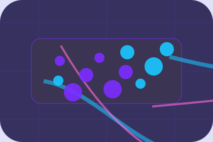
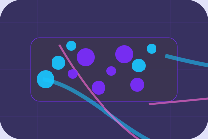
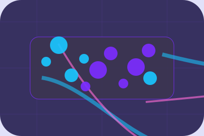

AlertCipherWard alert
Primary-reference resource rhythm for resources decisions in home.
Open resource
AlertPrimary-reference resource rhythm for resources decisions in home.
Open resource
ChecklistPrimary-reference resource rhythm for resources decisions in home.
Open resource
Response notePrimary-reference resource rhythm for resources decisions in home.
Open resource